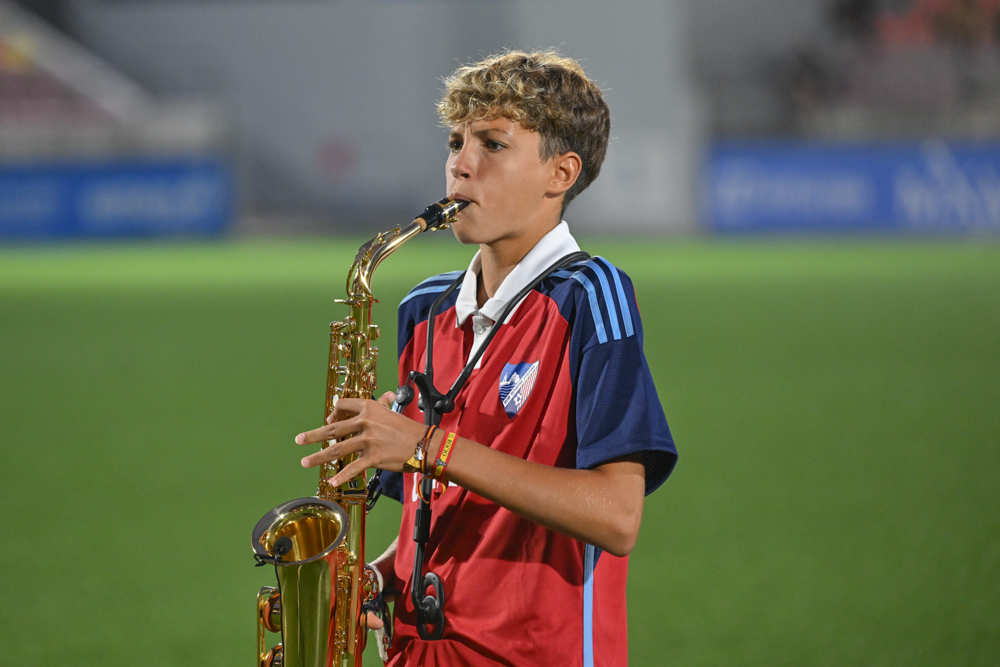
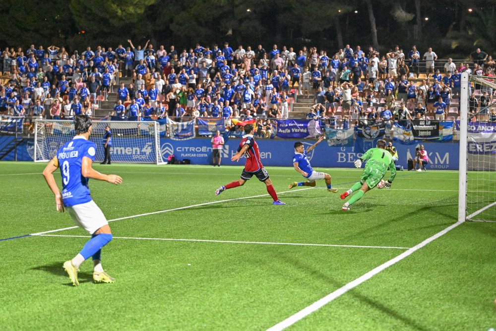

A Xerez side that grew into the game drops two points in Estepona
 Xerez CD
Xerez CDThe blue-and-whites hit the crossbar twice, through Moi and Josete, in an intense 0-0 that left a bittersweet feeling in the league opener, made special by the moving saxophone of an Estepona academy player with a Jerez-born father
Some draws feel like too little, and the one Xerez CD earned in their league opener at the Muñoz Pérez is one of them. The blue-and-whites hit the crossbar twice and left the Costa del Sol with the feeling that the match had more to offer. A 0-0 that shares the points with Estepona, but leaves in the air that touch of bitterness that only the woodwork produces when it becomes the last barrier before a goal.
Before a ball was kicked, the Muñoz Pérez was filled with emotion. Hugo Castro, an Estepona academy player, took on the responsibility of performing the local anthem on the saxophone, in a scene that gave both sets of fans goosebumps. But the story hid a lovely detail: the young player's father is from Jerez, as Castro himself revealed minutes before kick-off, admitting that his father had "a divided heart today" between his homeland and the colours his son represents. A touch of football's roots before ninety minutes of pure intensity.

Photo: Diario XerecistaAn unrecognisable Xerez at the start
Xavi Molist sprang no surprises and named the expected eleven: Pantoja in goal; Guille Campos, Manu Galán, Moi and Chacartegui in defence; Raúl López, Isuskiza and Jaime López in midfield; and Óscar Lorenzo, Rubén Mesa and Zequi Díaz in attack. Five survivors from last season and five new faces for the official presentation.
The curious part came in the approach. Pre-season had left the image of a team identified with a high press, keen to win the ball high up the pitch and stifle the opponent's build-up, but Xerez came out much more compact than usual, dropping into a mid-block and ceding ground to an Estepona side who were comfortable on the ball in the opening minutes.
The match, with a tense build-up because of the ticketing controversy and the broadcast problems — which left fans unable to follow the game until after the restart — began with two teams of opposing styles. Rubén Mesa fired a warning from the edge of the area (4') and a cross to the far post narrowly eluded Ballarín (7'). Jaime López, one of the standouts of the Xerez summer, got into the area but without luck in his finish (10'), a prelude to Xerez's first clear chance: a ball won by Isuskiza that Óscar Lorenzo turned into a cross which Rubén Mesa could not force over the line (14').
Estepona responded with a header from Ale Contreras that forced Pantoja into action, and the resulting corner again grazed the top corner of the goal. Set pieces, it was already clear, were going to be the main weapon for Manolo Sánchez's side all afternoon.

Photo: Diario XerecistaA battle with no let-up
The match did not lose an ounce of intensity. A surging run from Rubén Mesa was ruled out for offside (21') while the Deportivo gradually loosened up and gained ground. Moi had to resort to a hard challenge to stop a run into the box, receiving the first yellow card of the match (27'), and the resulting free kick again put Pantoja under pressure. The biggest scare of the first half came in the 34th minute, with a header from Caro after a low cross across the box that had the whole stand holding its breath.
Xerez, however, were not hiding completely: a pass from Jaime López was angled across goal by Óscar Lorenzo and the shot went just past the post (36'), and Guille Campos also fired a warning before the break (45').
Denied by the crossbar, twice over
After the break, the script barely changed. A foul by Raúl López almost proved costly for Xerez, with a free kick from Ballarín that crashed into the wall (49'). Both benches moved almost in unison: Manolo Sánchez sought fresh legs in attack, while Xavi Molist brought on Julito and Zelu for Jaime López and Óscar Lorenzo.
And it was then that the match turned into a textbook end-to-end affair. In the 65th minute, a great individual run from Zelu down the flank ended in a cross from Rubén Mesa that Zequi missed by centimetres. Two minutes later, Julito hit the post, although the linesman had already raised his flag.
Zelu, who had become the set-piece specialist after coming on, almost caught out Fran Martínez with a good free kick (71'), and barely three minutes later came the first warning from the woodwork: Moi connected with a thunderous strike that crashed against the crossbar from another free kick delivered by Zelu himself, in what looked like the clearest chance of the match.
But Xerez still had one last shot left. In stoppage time, with the match in its dying moments, Josete — who had just come on — repeated the blue-and-white curse and hit the crossbar with another effort, in the play that best summed up the afternoon: a Xerez side that pushed, deserved more and found the woodwork as their only obstacle.
Penalty appeals at both ends
Estepona, for their part, did not give up either and threatened with three dangerous attacks in the closing stages, as well as appealing for a penalty in the Xerez area (83') that the referee chose not to give. The reply soon came at the other end: the blue-and-whites appealed for one of their own after Julito went down in the opposition area (89'), without the Murcia referee daring to award anything in either case. Two appeals, one at each end, that sum up how tight and contested the match was until the end. Barely three minutes of added time were enough to confirm a draw that feels like too little for a Xerez side that grew into the game and leave Estepona feeling they have dropped two points along the way.
Match facts
CD Estepona: Fran Martínez, Candelas, Heber Pena, Jule Jon, Ariel Herrero (Jorge Álvarez, 56'), Ale Contreras (Samu Expósito, 68'), Ballarín (Nacho Ramón, 56'), Sandji Baradij, Maxi B., Marín and Caro.
Xerez CD: Pantoja, Guille Campos, Manu Galán (Josete, 87'), Moi, Chacartegui, Raúl López, Isuskiza, Jaime López (Julito, 61'), Óscar Lorenzo (Zelu, 61'), Zequi Díaz (Jaime Fernández, 73') and Rubén Mesa (Fali, 73').
Referee: Víctor García Acosta (Murcia committee). He booked Maxi, Ariel Herrero, Caro and Sandji for the home side, and Moi and Raúl López for Xerez.
Notes: First-matchday league fixture in Group 4 of the Segunda RFEF played at the Muñoz Pérez, with more than 200 Xerez supporters travelling to the Costa del Sol. Before kick-off, young Hugo Castro, an Estepona academy player whose father is from Jerez, performed the local anthem on the saxophone in a moving gesture ahead of the match.
🇪🇸 Leer en español ← Back to home